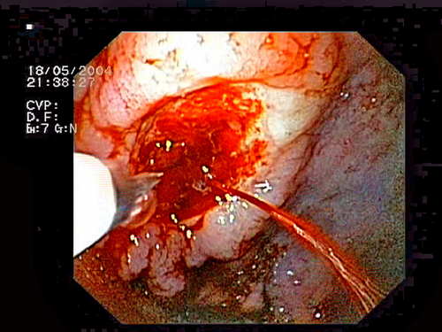
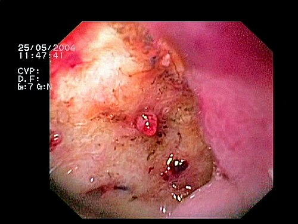
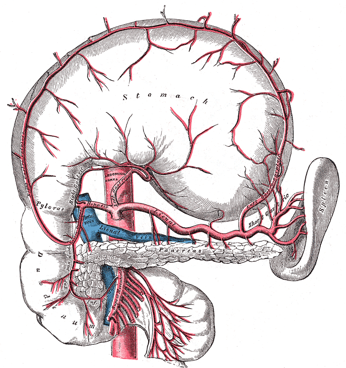

דיון מקרים: דימום ממערכת העיכול העליונה
שלושה מטופלים בחדר המיון: כיב פפטי מדמם, דליות ושט וקרע אחרי הקאות. מההערכה הראשונה ועד ההחלטה על ניתוח
בסוף המפגש תדעו
- להבדיל בין דימום עליון לתחתון לפי הסיפור, הבדיקה והמעבדה ולהעריך את כמות הדם שאבדה
- לנהל את השעה הראשונה: גישה ורידית, נוזלים, סף לעירוי דם, מעכבי משאבת פרוטונים ומתי לקרוא לכירורג
- לקרוא ממצא אנדוסקופי לפי סיווג פורסט ולהבין מה הוא אומר על הסיכון לדימום חוזר
- להכיר את הצעדים כשהאנדוסקופיה נכשלת: אנדוסקופיה חוזרת, אמבוליזציה וניתוח
- לזהות דימום מדליות ולדעת במה הטיפול בו שונה
דימום עליון: מה צריך לדעת לפני המקרים
- דימום עליון: מקורו בוושט, בקיבה או בתריסריון, כלומר מעל לרצועת טרייץ
- הקאה דמית אדומה: דימום בינוני עד קשה שאולי עדיין פעיל. "גרגרי קפה": דימום מוגבל שאולי כבר נעצר
- מלנה (צואה שחורה כזפת): ב-90% מקורה מעל לרצועת טרייץ
- דם אדום מהחלחולת הוא בדרך כלל דימום תחתון, אבל ב-10–15% מהמקרים המקור עליון ומסיבי
צואה שחורה ועילפון
- דופק 112, לחץ דם 98/60, מבולבל מעט, גפיים קרות ולחות
- בטן רכה, רגישות קלה באפיגסטריום, בלי סימני צפקת
- בבדיקה רקטלית: צואה שחורה כזפת
- המוגלובין 10.8 (לפני חצי שנה 14). אוריאה גבוהה, קראטינין תקין
- עליון או תחתון? מה בסיפור תומך בכך?
- כמה דם הוא איבד, בערך?
- למה ההמוגלובין "רק" 10.8?
- מה עושים ב-60 הדקות הראשונות?
הסיפור, הבדיקה והמעבדה
מה מכוון למקור עליון
- מלנה בבדיקה רקטלית: יחס סבירות 25. מלנה שהמטופל מדווח עליה: 5.1–5.9
- יחס אוריאה לקראטינין גבוה (מעל 30 ביחידות BUN): יחס סבירות 7.5. הדם נספג במעי הדק
- קרישי דם בצואה מרחיקים ממקור עליון (יחס סבירות 0.05)
- גורמי סיכון לכיב: נוגדי דלקת שאינם סטרואידים, אספירין, H. pylori, גיל, נוגדי קרישה
כמה דם אבד
המטופל שלנו: דופק 112, לחץ דם גבולי ובלבול. כנראה 30% ויותר מנפח הדם
החייאה לפני אבחנה
- דימום קשה ומתמשך: מיד, ביחס 1:1:1 (תאים, פלזמה, טסיות), כמו בחבלה
- לא יציב למרות נוזלים: 1–2 מנות
- סיכון גבוה (מבוגר, מחלת לב): מתחת ל-8 גר׳/ד״ל
- סיכון נמוך: מתחת ל-7 גר׳/ד״ל
כיב בדופן האחורית של התריסריון, עם כלי דם גלוי
אנדוסקופיה בתוך 24 שעות היא הבדיקה והטיפול. מה שרואים בבסיס הכיב מנבא דימום חוזר (סיווג פורסט)


יום אחרי: שוב מלנה ולחץ דם 85/50
- דימום חוזר אחרי טיפול אנדוסקופי מוצלח: קודם כול אנדוסקופיה חוזרת
- דימום שחוזר שוב: אנגיוגרפיה עם אמבוליזציה, אם המטופל יציב ויש מומחיות
- אמבוליזציה מונעת לכולם? לא. במחקר אקראי של 241 מטופלים בסיכון גבוה: דימום חוזר 10% לעומת 11%
- מתי ניתוח: חוסר יציבות המודינמית, כישלון של טיפול אנדוסקופי, או דימום שחוזר אחרי כמה ניסיונות אנדוסקופיים או צנתוריים
- יעוץ כירורגי ורדיולוגי מוקדם בכל דימום חמור או כשיש לא יציבות שלא מגיבה להחייאה
הקיבה מורמת: מאיפה מדממים?

👆 לחצו על אזור בציור כדי לקרוא עליו
יורד מאחורי החלק הראשון של התריסריון. כיב בדופן האחורית שוחק אותו. לכן זה העורק שמדמם ברוב הניתוחים לכיב מדמם. בניתוח: תפר מעל ומתחת לכיב ותפר U מדיאלי לענף הלבלבי הרוחבי.
H. pylori קשור ל-90% מהכיבים כאן. בניתוח מזיזים את התריסריון (Kocher), פותחים את הדופן הקדמית לאורך ונזהרים מצינור המרה המשותף שעובר קרוב לתפר.
מספק את העקמומיות הקטנה. נגע Dieulafoy נמצא בדרך כלל ליד המעבר לוושט בעקמומיות הקטנה. באנגיוגרפיה רואים עורק מפותל באזור של העורק הזה. לצידו עובר הווריד הקורונרי, שמעביר לחץ שערי לדליות הוושט.
ביתר לחץ שערי הדם מוצא דרכים עוקפות. דליות הוושט והקיבה הן אחת מהן. TIPS יוצר חיבור בתוך הכבד בין הווריד השערי למערכת הוורידים הכללית ומוריד את הלחץ.
פקקת בווריד הטחולי, בדרך כלל אחרי דלקת לבלב, גורמת לדליות קיבה מבודדות. כאן כריתת טחול מרפאת, אבל קודם מוכיחים את הפקקת בהדמיה, כי רוב דליות הקיבה הן מיתר לחץ שערי כללי.
מקשרים בין הטחול לפונדוס. ביתר לחץ שערי הלחץ עובר דרך הוורידים הגסטריים הקצרים והאחוריים לפונדוס. דליות קיבה מבודדות נוטות יותר לדמם מדליות שממשיכות מהוושט.
מה עושים בניתוח לכיב מדמם
- לרוב חתך באמצע הבטן העליונה, בעיקר במטופל לא יציב
- מוביליזציה של התריסריון (Kocher) ופתיחה לאורך של הדופן הקדמית, עד מעבר לשוער אם צריך
- תפר בשלוש נקודות בבסיס הכיב: מעל ומתחת לעורק הגסטרודואודנלי. תפר U מדיאלי לענף הלבלבי הרוחבי
- זהירות מצינור המרה המשותף בתוך התפר
- סגירה לרוחב, כדי לא להצר (פילורופלסטיקה)
- קטיעת עצב הוואגוס רק במטופל יציב
- 4–5% מהכיבים שנראים שפירים הם ממאירים. לכן כורתים את הכיב או לוקחים ביופסיה
- עקמומיות גדולה, אנטרום, גוף הקיבה: כריתת טריז וסגירה
- עקמומיות קטנה ליד הזווית: כריתת קיבה דיסטלית ושחזור (Billroth I, Billroth II או Roux-en-Y)
- ליד המעבר לוושט: פתיחת הקיבה מלפנים ותפירת הכיב מבפנים
שלא יחזור: H. pylori ונוגדי דלקת
- H. pylori קשור ל-90% מהכיבים בתריסריון ול-70–90% מהכיבים בקיבה
- נוגדי דלקת שאינם סטרואידים מעלים פי 3–4 את הסיכון לכיב וגם את הסיכון לסיבוכים. כשמפסיקים אותם, הכיב בדרך כלל לא חוזר
- אחרי מיגור החיידק: חזרה של 2% בלבד וריפוי ראשוני של 90%
- 20–30% לא נרפאים מהטיפול הראשון. לכן מוודאים מיגור 4–6 שבועות אחרי סיום הטיפול: בדיקת נשיפה, אנטיגן בצואה או ביופסיה
הקאה של דם טרי אצל חולה שחמת
- צהבת, מיימת, נמנום ובלבול
- דופק 124, לחץ דם 84/50
- המוגלובין 8.1, טסיות 70 אלף, INR מוארך
- מה המקור הסביר ומה עוד באבחנה המבדלת?
- אילו תרופות מתחילים כבר במיון, עוד לפני האנדוסקופיה?
- מתי אנדוסקופיה ומה עושים בה?
- מה עושים אם הדימום לא נעצר?
דליות ושט: טיפול אחר מכיב
- נתיב אוויר: אינטובציה בהקאה דמית מתמשכת או במצב הכרה ירוד. מקלה על האנדוסקופיה ומורידה סיכון לשאיפה
- עירוי שמרני: מחקר אקראי הראה תמותה נמוכה יותר ופחות דימום חוזר כשנותנים דם מתחת ל-7 ולא מתחת ל-9
- אוקטראוטיד: בולוס 50 ואחריו 50 לשעה בעירוי רציף (מק״ג)
- אנטיביוטיקה לכולם (למשל צפטריאקסון): עד 20% מגיעים עם זיהום ועוד עד 50% מפתחים זיהום באשפוז
- אנדוסקופיה בתוך 12 שעות עם קשירה בגומיות. עוצרת 80–90% מהדימומים. טובה יותר מטרשה
- דימום שלא נשלט: בלון לחץ (Sengstaken-Blakemore) כגשר. עוצר מעל 85%, אבל עד 50% מדממים שוב אחרי ריקון. רק אחרי אינטובציה ואחרי וידוא מיקום
- כישלון (10–20%): TIPS. ניתוח שנט בחירום: תמותה מעל 25%

אחרי מסיבה: הקאות ואז דם
האלגוריתם: הקאה דמית או מלנה
מחקרים שכדאי להכיר
מטופלים בסיכון נמוך מאוד (Glasgow-Blatchford 0–1) אפשר לשחרר עם מעקב. סף לעירוי 7 גר׳/ד״ל. אריתרומיצין לפני האנדוסקופיה ואנדוסקופיה בתוך 24 שעות. אחרי טיפול: מינון גבוה של מעכב משאבה 3 ימים ואז פעמיים ביום בפה שבועיים
Laine L et al. Am J Gastroenterol 2021;116:899-917224 מטופלים עם דימום עליון פעיל שאינו מדליות. שליטה בדימום ב-30 יום: 90.1% עם האבקה (TC-325) לעומת 81.4%. פחות כישלונות באנדוסקופיה הראשונה (2.7% לעומת 9.7%). דימום חוזר ותמותה דומים
Lau JYW et al. Ann Intern Med 2022;175:171-8112 מטופלים עם כיב Forrest Ia–IIb. עצירה ראשונית של הדימום: 98.4% לעומת 78.4%. דימום חוזר ב-30 יום נמוך בשתי הקבוצות (1.6% ו-3.9%)
Soriani P et al. Endoscopy 2024;56:665-73תרופה וזו-אקטיבית מוקדם ולמשך 2–5 ימים, אנטיביוטיקה מהקבלה, אנדוסקופיה בתוך 12 שעות. TIPS מוקדם (בתוך 72 שעות, רצוי 24) למטופלים בסיכון גבוה: Child-Pugh C מתחת ל-14 נקודות, או B מעל 7 עם דימום פעיל באנדוסקופיה
de Franchis R et al. J Hepatol 2022;76:959-74חמישה דברים לקחת למחלקה
- מלנה בבדיקה רקטלית ויחס אוריאה לקראטינין גבוה מכוונים לדימום עליון. המוגלובין תקין בהתחלה לא מרגיע
- קודם החייאה: שני עירויים רחבים, נוזלים, דם לפי המצב הקליני (סף 7. בחולה לב: 8) ומעכב משאבה לווריד
- אנדוסקופיה בתוך 24 שעות היא אבחנה וטיפול. כלי דם גלוי או דימום פעיל מקבלים טיפול אנדוסקופי
- דימום חוזר: אנדוסקופיה שוב, אחר כך אמבוליזציה. ניתוח כשהמטופל לא יציב או כשהכול נכשל
- חשד לדליות: אוקטראוטיד, אנטיביוטיקה ואנדוסקופיה בתוך 12 שעות עם קשירה. כישלון: TIPS